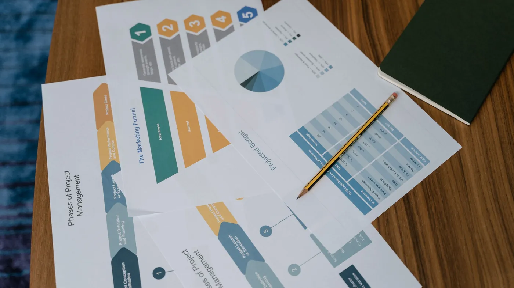

Most agent answers that turn out wrong are not reasoning failures. They are definition failures, delivered in a confident voice.
Denodo shipped version 9.5 of its platform, and the interesting part is not the release notes. It is what the release is aimed at. The headline additions are a knowledge graph that maps how data assets relate to each other, and something called metric views: a place to define a business measure once, so every tool asking for it gets the same answer.
That is a plumbing release. It is also a quiet admission about where enterprise AI keeps going wrong. Vendors are not racing to make agents smarter right now. They are racing to give agents something reliable to read.
Ask three departments how many active customers you have and you will get three numbers. Sales counts anyone with an open opportunity. Finance counts anyone who paid in the last quarter. Support counts anyone with a login. Everybody is right, because nobody ever agreed on the word.
People handle that ambiguity by asking a follow-up question. An agent does not. It reaches for whichever table it can see, applies whatever filter looks reasonable, and returns a number in a full sentence with no hedging. The confidence is the dangerous part. A spreadsheet that disagrees with another spreadsheet starts an argument. An agent that disagrees with your books just gets believed.
The cost shows up later, in a quarterly forecast built on the wrong denominator, or in a support agent telling a customer they are out of contract when they are not.

You do not need an enterprise data platform to fix this. You need the agent to stop guessing.
The pattern that works is narrow retrieval instead of open access. Rather than pointing an agent at your warehouse and hoping, you give it a small, curated set of things it is allowed to consult: the definitions your business actually uses, the approved calculation for each measure, the policy document that says what qualifies. That is a retrieval pipeline, and it is one of the things CX-Builder was built to assemble.
The second half is the tools. An agent that needs a customer count should call a function that runs your approved query, not write SQL from scratch. The function is the definition. Once it exists, every agent that touches the number is using the same one, and changing the rule means changing it in a single place.
Where the question is genuinely ambiguous, the agent should say so. A step that asks a clarifying question, or hands off to a person, is better than a confident wrong answer. That gate is a node in the flow, not a research project.
Start with a glossary, not a model. Write down the twenty terms your business argues about and the exact rule behind each one, then load that into a vector store so the agent retrieves the definition before it answers. Wrap the measures that matter in tools with fixed parameters, so the agent chooses which question to ask but never how to compute it. Add a condition that routes anything outside those tools to a human rather than to improvisation.
Self-hosting matters more here than usual, because the glossary and the queries describe how your company works. That content should sit on your own infrastructure alongside the flow that reads it.
Before you buy anything, run the three-department test. Pick your most quoted metric, ask three teams to define it in writing, and compare. If the definitions differ, that gap is what your agent will fill in on its own. Close it in a glossary and a query your agent is required to use, and most of what looks like an AI accuracy problem stops happening.